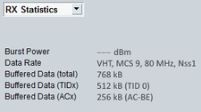

To display statistical information about the signal received from the device under test, select "RX Statistics" in the field below the "DUT / UE Info" area.

Average power of the last burst received from the DUT, indicating the quality of the physical link.
The power is measured by the R&S CMW over the preamble. A value is only available in associated state.
Remote command:Displays information related to the data rate of the DUT signal, for example the frame format, the modulation and coding scheme, the channel bandwidth and the number of spatial streams.
The display of this information requires an SUA.
Remote command:Indicates asynchronous buffer status report (A-BSR). An STA can asynchronously indicate the amount of buffered data to be transmit to assist in the scheduling decisions of the AP.
Option R&S CMW-KS657 is required.
Remote command: